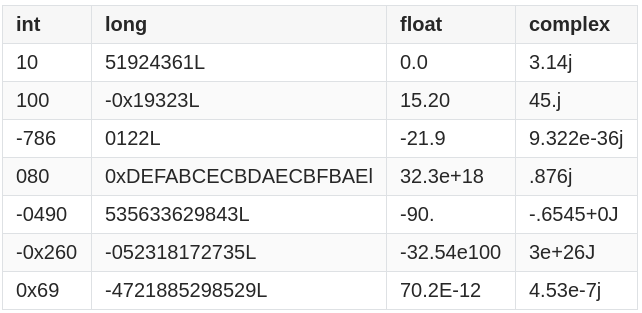
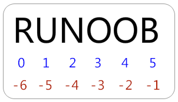
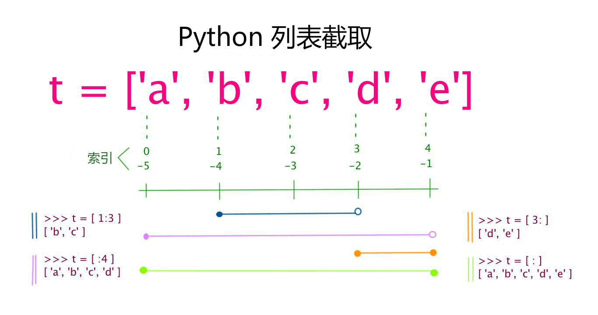
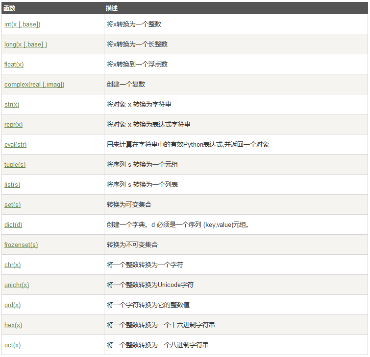
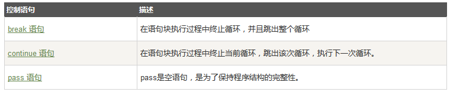

python基础语法扫盲(python2.0+)
在Python里面，一切都是对象，包括函数，数字，包括类也是对象，那么也就是说在Python里面什么都能当作变量使用。
python的作用域
- python的作用域是通过代码对齐来实现的，没有花括号或者关键字标注，相邻对齐的代码为同一个作用域,也不用分号标注行结束。
- 要特别小心的是在函数里面是不能给全局变量赋值的，在函数里面试图给全局变量赋值的语句只会重新创建一个和全局变量名字一样的局部变量。但是如果在函数里面没有定义过和全局变量一样的局部变量的话，是可以读取全局变量的值的。
python注释
python注释使用”#”符号打头表示注释该行代码，要作用一片代码的话使用”””(三个双引号)包裹。
python变量
python变量的定义不需要指定数据类型，解释器会自动进行解析的。
python具有以下数据类型：
Numbers（数字）
String（字符串）
List（列表）
Tuple（元组）
Dictionary（字典）
数字
python的数字类型：
int（有符号整型）
long（长整型[也可以代表八进制和十六进制]）
float（浮点型）
complex（复数）
例子

注意：
- 长整型也可以使用小写 l，但是还是建议您使用大写 L，避免与数字 1 混淆。Python使用 L 来显示长整型。
- Python 还支持复数，复数由实数部分和虚数部分构成，可以用 a + bj,或者 complex(a,b) 表示， 复数的实部 a 和虚部 b 都是浮点型。
字符串
python字符串的角标有两种索引方式，第一种是常规的从零开始,第二种是特有的从最后一个字符开始，最后一个字符-1，然后倒序依次-2,-3,-4……

- 截取一段字符串的子串
1
2
3> s = 'abcdef'
> s[1:5]
'bcde'
需要的注意的是[头下标:尾下标]来截取字符串，其下标是从0（最左）或者-1（最右）开始的，可以是正数或者负数，下标可以为空表示取到头或尾。该方式的返回值是新创建的对象，内容包含左边下边界但是不包含右边下边界。
加号（+）是字符串连接运算符，星号（*）是重复操作。如下实例：1
2
3
4
5
6
7
8
9
10
11
12
#!/usr/bin/python
# -*- coding: UTF-8 -*-
str = 'Hello World!'
print str # 输出完整字符串
print str[0] # 输出字符串中的第一个字符
print str[2:5] # 输出字符串中第三个至第五个之间的字符串
print str[2:] # 输出从第三个字符开始的字符串
print str * 2 # 输出字符串两次
print str + "TEST" # 输出连接的字符串
输出为1
2
3
4
5
6Hello World!
H
llo
llo World!
Hello World!Hello World!
Hello World!TEST
用[ ]标识的列表
列表里面的内容支持字符，数字，字符串甚至可以包含列表（即嵌套）。
列表中值的切割也可以用到变量 [头下标:尾下标] ，就可以截取相应的列表，从左到右索引默认 0 开始，从右到左索引默认 -1 开始，下标可以为空表示取到头或尾。

和字符串一样，加号 + 是列表连接运算符，星号 * 是重复操作。如下实例：1
2
3
4
5
6
7
8
9
10
11
12
13
#!/usr/bin/python
# -*- coding: UTF-8 -*-
list = [ 'runoob', 786 , 2.23, 'john', 70.2 ]
tinylist = [123, 'john']
print list # 输出完整列表
print list[0] # 输出列表的第一个元素
print list[1:3] # 输出第二个至第三个元素
print list[2:] # 输出从第三个开始至列表末尾的所有元素
print tinylist * 2 # 输出列表两次
print list + tinylist # 打印组合的列表
运行结果为1
2
3
4
5
6['runoob', 786, 2.23, 'john', 70.2]
runoob
[786, 2.23]
[2.23, 'john', 70.2]
[123, 'john', 123, 'john']
['runoob', 786, 2.23, 'john', 70.2, 123, 'john']
用( )标识的元组
元组和列表的区别在于元组不能二次赋值，相当于只读列表。1
2
3
4
5
6
7
8
9
10
11
12
13
#!/usr/bin/python
# -*- coding: UTF-8 -*-
tuple = ( 'runoob', 786 , 2.23, 'john', 70.2 )
tinytuple = (123, 'john')
print tuple # 输出完整元组
print tuple[0] # 输出元组的第一个元素
print tuple[1:3] # 输出第二个至第三个的元素
print tuple[2:] # 输出从第三个开始至列表末尾的所有元素
print tinytuple * 2 # 输出元组两次
print tuple + tinytuple # 打印组合的元组
以上输出结果：1
2
3
4
5
6('runoob', 786, 2.23, 'john', 70.2)
runoob
(786, 2.23)
(2.23, 'john', 70.2)
(123, 'john', 123, 'john')
('runoob', 786, 2.23, 'john', 70.2, 123, 'john')
一下表达式非法：1
tuple[2]=1000 #元组不能二次赋值
用{ }标识的字典
字典由索引(key)和它对应的值value组成。
字典和列表的区别在于：字典当中的元素是通过键来存取的，而不是通过偏移存取。1
2
3
4
5
6
7
8
9
10
11
12
13
14
15
16
#!/usr/bin/python
# -*- coding: UTF-8 -*-
dict = {}
dict['one'] = "This is one"
dict[2] = "This is two"
tinydict = {'name': 'john','code':6734, 'dept': 'sales'}
print dict['one'] # 输出键为'one' 的值
print dict[2] # 输出键为 2 的值
print tinydict # 输出完整的字典
print tinydict.keys() # 输出所有键
print tinydict.values() # 输出所有值
输出结果为：1
2
3
4
5This is one
This is two
{'dept': 'sales', 'code': 6734, 'name': 'john'}
['dept', 'code', 'name']
['sales', 6734, 'john']
数据类型转换
数据类型的转换，你只需要将数据类型作为函数名即可。

条件语句
if 语句的判断条件可以用>（大于）、<(小于)、==（等于）、>=（大于等于）、<=（小于等于）来表示其关系。python不支持Switch语句。1
2
3
4
5
6
7
8if 判断条件1:
执行语句1……
elif 判断条件2:
执行语句2……
elif 判断条件3:
执行语句3……
else:
执行语句4……
注意每个判断语句后面都要有冒号。
如果判断需要多个条件需同时判断时，可以使用 or （或），表示两个条件有一个成立时判断条件成功；使用 and （与）时，表示只有两个条件同时成立的情况下，判断条件才成功。1
2
3
4
5
6
7
8
9
10
11
12
13
14
15
16
17
18
19
20
21
22
23
24
25
#!/usr/bin/python
# -*- coding: UTF-8 -*-
# 例3：if语句多个条件
num = 9
if num >= 0 and num <= 10: # 判断值是否在0~10之间
print 'hello'
# 输出结果: hello
num = 10
if num < 0 or num > 10: # 判断值是否在小于0或大于10
print 'hello'
else:
print 'undefine'
# 输出结果: undefine
num = 8
# 判断值是否在0~5或者10~15之间
if (num >= 0 and num <= 5) or (num >= 10 and num <= 15):
print 'hello'
else:
print 'undefine'
# 输出结果: undefine
循环语句
循环控制语句

while
1 | while 判断条件： |
执行语句可以是单个语句或语句块。判断条件可以是任何表达式，任何非零、或非空（null）的值均为true。
while还能与else配合使用，表示条件语句不为真时执行else语句。1
2
3
4
5
6
7
8
9
#!/usr/bin/python
count = 0
while count < 5:
print count, " is less than 5"
count = count + 1
else:
print count, " is not less than 5"
运行结果：1
2
3
4
5
60 is less than 5
1 is less than 5
2 is less than 5
3 is less than 5
4 is less than 5
5 is not less than 5
for
1 | for iterating_var in sequence: |
基本实例:
1 |
|
执行结果：1
2
3
4
5
6
7
8
9
10当前字母 : P
当前字母 : y
当前字母 : t
当前字母 : h
当前字母 : o
当前字母 : n
当前水果 : banana
当前水果 : apple
当前水果 : mango
Good bye!
通过序列索引迭代：
1 |
|
输出结果:1
2
3
4当前水果 : banana
当前水果 : apple
当前水果 : mango
Good bye!
与else搭配使用
在 python 中，for … else 表示这样的意思，for 中的语句和普通的没有区别，else 中的语句会在循环正常执行完（即 for 不是通过 break 跳出而中断的）的情况下执行，while … else 也是一样。1
2
3
4
5
6
7
8
9
10
11
12
#!/usr/bin/python
# -*- coding: UTF-8 -*-
for num in range(10,20): # 迭代 10 到 20 之间的数字
for i in range(2,num): # 根据因子迭代
if num%i == 0: # 确定第一个因子
j=num/i # 计算第二个因子
print '%d 等于 %d * %d' % (num,i,j)
break # 跳出当前循环
else: # 循环的 else 部分
print num, '是一个质数'
输出结果：1
2
3
4
5
6
7
8
9
1010 等于 2 * 5
11 是一个质数
12 等于 2 * 6
13 是一个质数
14 等于 2 * 7
15 等于 3 * 5
16 等于 2 * 8
17 是一个质数
18 等于 2 * 9
19 是一个质数
另外，python允许在循环里面嵌套循环